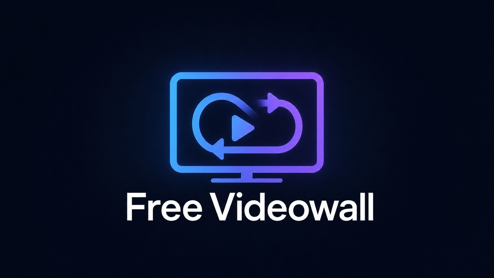

Your screen.
Your loop.
Videos and pictures from a USB stick. A simple playlist. Endless playback on your Roku.
Developer preview · Not yet in the Roku Store
Currently available as a Roku development preview. Samsung Tizen is in development and is not yet available as a regular download.
Just play. Keep it simple.
No trial period. No watermark. Every feature is free. The source code is yours to study, modify and share under the Apache 2.0 license — including commercial use.
Mix your own videos and pictures for an exhibition, a reception screen or a personal display. Playback starts when you open the app, without a menu. This is one looping playlist on one screen; it does not synchronize multiple TVs.
Build your loop visually.
Paste filenames or an M3U. Arrange videos and pictures, set durations and try a placeholder preview — all locally in your browser.
Open playlist workshop →Three steps. Then repeat.
- Copy your videos and pictures to a compatible USB stick. Folders are fine.
- Create a plain text file called playlist.m3u in the root of the stick. List the files in playback order.
- Connect the stick to a Roku with USB media support and open Free Videowall. The last item loops back to the first.
#EXTM3U
#EXTINF:-1,Welcome
videos/welcome.mp4
#EXTINF:12,Our next event
pictures/event.jpg
#EXTINF:-1,See you soon
#EXT-X-FADE:1.5
videos/goodbye.mp4A softer change of scene.
Optional 1.5-second picture blends connect your clips, including the last-to-first transition. Prepare the small start and end images once with our free USB helper. Set a different duration per entry with EXT-X-FADE.
The blend uses still frames, not two moving videos. Audio is not crossfaded. Without prepared video frames, a black gap can occur.
Your files stay with you.
The app reads local USB files. No uploads, analytics, advertising or app-operated cloud service. No internet streams.
A few practical details.
Which files work?
Videos: MP4, M4V, MOV, MKV and TS, depending on the device and codec. Pictures: JPG and PNG. Use a Roku device with USB media support. A supported container alone does not guarantee playback.
Will it start when the TV powers on?
Playback starts when the app opens. Power-on autostart and locking the TV to this app are not guaranteed.
Can I use the remote?
Play/Pause pauses and resumes. Forward and Rewind seek within a video. Replay jumps back within the video. Back exits the app.
Where can I get help?
Free means free.
If Free Videowall helps you, you can voluntarily support its development through GitHub Sponsors. The app and every feature remain completely free, with or without your support.
♡ Support development